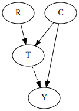
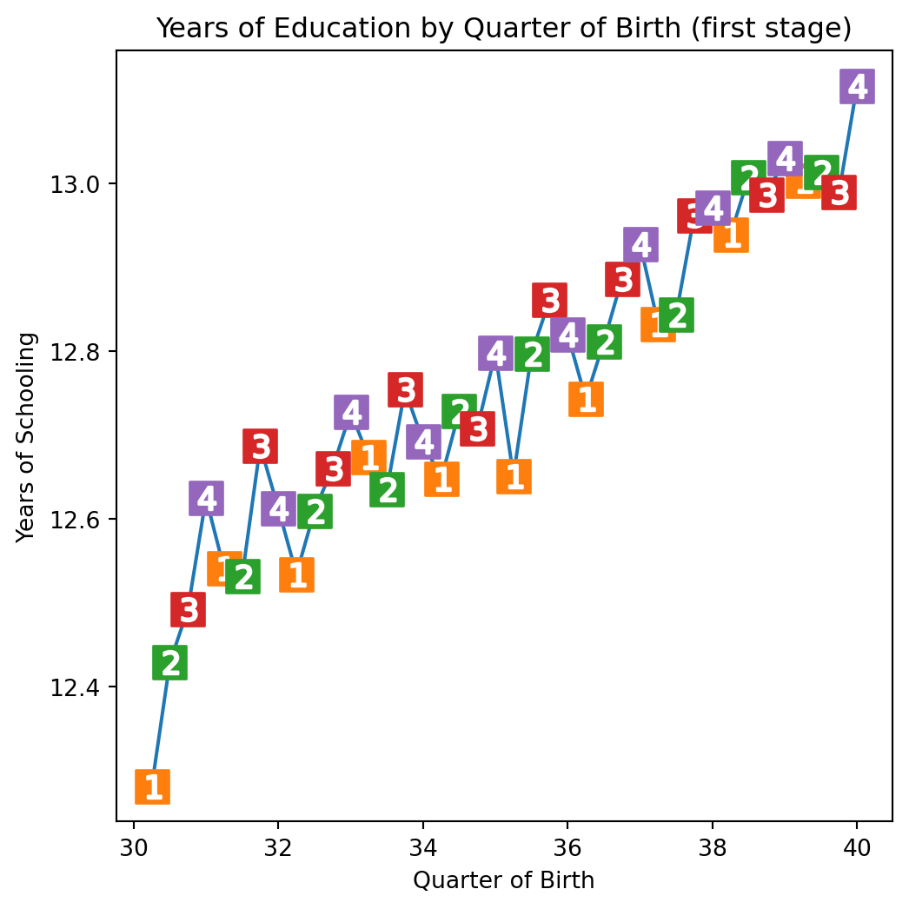
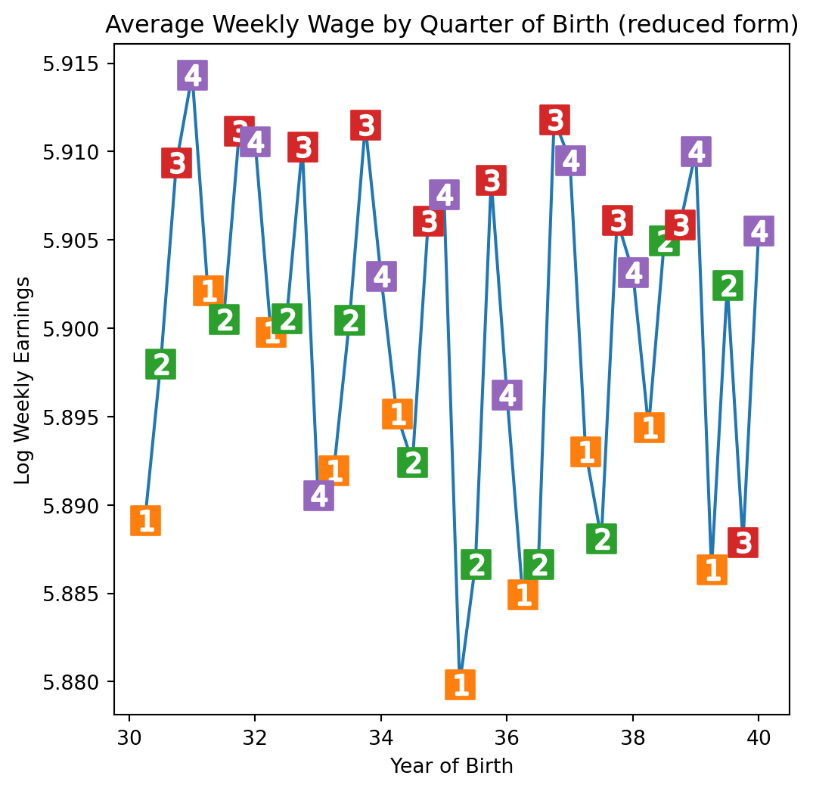
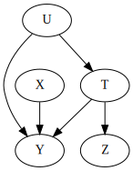
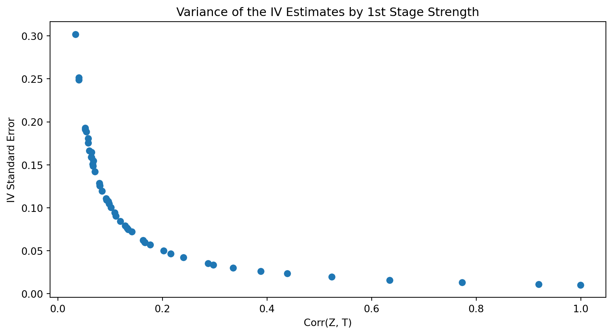

ECON526: Quantitative Economics with Data Science Applications
Instrumental Variables
Overview
Summary
Last class we learned about regression, and how we can use it to estimate treatment effects.
Today we will learn the details of how to estimate the effect of a treatment on an outcome, when the treatment is not randomly assigned.
Specifically, we will use a method called instrumental variables.
We will also discuss matching (the alternative to regression) and propensity scores.
Instrumental Variables
Instrumental Variables
Suppose we want to estimate the effect of a treatment on an outcome.
BUT there is a confounder, something that affects both the treatment and the outcome.
- So we can’t distinguish the pure effect of the treatment from the effect of the confounder.
- However, we also have data on a variable that affects the treatment, but does not lie on any dependence path between the treatment and the outcome.
Instrumental Variables
- In the section on DAGs, we saw one example of this, that looked like this:

- Of course, the regression we want to run is \(Y = \beta_0 + \beta_1 T + \beta_2 C + \epsilon\).
- But we don’t have data on \(C\). We have to settle for
- \(Y = \beta_0 + \kappa T + v\), where \(v = \beta C + \epsilon\)
Instrumental Variables
- The variable \(R\) is an instrumental variable for \(T\) if
- \(R\) affects \(T\) (i.e., \(R\) is correlated with \(T\))
- \(R\) does not affect \(Y\) except through \(T\) (i.e., \(R\mid Y \perp T\))
- That means we can use \(R\) to mimic a randomized experiment.
Instrumental Variables
- Since the instrument \(R\) is only correlated with the outcome through \(T\), this implies that \(\text{cov}(R, \epsilon) = 0\).
- This is called an exclusion restriction.
- It is the result of our conditional independence assumption.
- We also have that \[ \newcommand{\cov}{\text{cov}} \newcommand{\var}{\text{var}} \begin{aligned} \cov(R,Y) &= \cov(R, \beta_0 + \kappa T + v_i)\\ &= \kappa \cov(R, T) + \cov(R, v_i) = \kappa \cov (R,T) \end{aligned} \]
Instrumental Variables
- Divide both sides by \(\var(R)\) to get
\[ \begin{aligned} \cov(R,Y) &= \kappa \cov(R,T)\\ \cov(R,Y)/\var(R) &= \kappa \cov(R,T)/\var(R)\\ \frac{\cov(R,Y)/\var(R)}{\cov(R,T)/\var(R)} &= \kappa \end{aligned} \]
Notice that the numerator is regression coefficient of \(R\) on \(Y\).
- The reduced-form coefficient
The denominator is the regression coefficient of \(T\) on \(R\).
- The first-stage coefficient
This amounts to scaling the effect of R on Y by the effect of R on T.
Since it’s linear, we are converting the variation from “units of R” to “units of T”.
Instrumental Variables

- In practice we estimate the reduced-form equation, and use \(R\) to predict \(T\).
- \(\hat{T} \approx \hat{\beta}_0 + \hat{\beta}_1 R\)
- Then we use the predicted values of \(T\) in the outcome equation
- \(Y = \kappa_0 + \kappa \hat{T} + v_i\)
- In other words we are using only the variation in \(T\) that is due to \(R\).
- This is called the two-stage least squares (2SLS) estimator.
Example: Returns to Education
Example: Returns to Education
- In this example, we’ll use data from Angrist and Keueger (QJE, 1991) to estimate the effect of education on earnings.
Example: Returns to Education
Example: Returns to Education
- We must assume that
- \(\cov(QOB, Education) \neq 0\)
- \(Earnings \perp QOB \mid Education\)
Example: Returns to Education
- The first assumption is easy; we can check directly from the data
import matplotlib.pyplot as plt
group_data = (df
.groupby(["year_of_birth", "quarter_of_birth"])
[["log_wage", "years_of_schooling"]]
.mean()
.reset_index()
.assign(time_of_birth = lambda d: d["year_of_birth"] + (d["quarter_of_birth"])/4))
plt.figure(figsize=(6,6))
plt.plot(group_data["time_of_birth"], group_data["years_of_schooling"], zorder=-1)
for q in range(1, 5):
x = group_data.query(f"quarter_of_birth=={q}")["time_of_birth"]
y = group_data.query(f"quarter_of_birth=={q}")["years_of_schooling"]
plt.scatter(x, y, marker="s", s=200, c=f"C{q}")
plt.scatter(x, y, marker=f"${q}$", s=100, c=f"white")
plt.title("Years of Education by Quarter of Birth (first stage)")
plt.xlabel("Quarter of Birth")
plt.ylabel("Years of Schooling");
Example: Returns to Education
- Angrist and Krueger (1991) argue that the first assumption is reasonable because
- The quarter of birth is randomly assigned
- The quarter of birth affects education through compulsory schooling law
- The compulsory schooling law is a law that requires students to stay in school until a certain age.
- In the US, this age is 16.
- In Canada, this age is 18.
- The law is enforced by the government, so it is not affected by the ability of the student.
Example: Returns to Education

Example: Returns to Education
- Unfortunately, there is no way to test the second assumption from the data.
- We have to assume that it is true.
- In this case, it is hard to come up with another plausible explanation for why quarter of birth would affect earnings.
- In the paper, they also add that there is no correlation of QOB with college graduation rates, indicating that compulsory schooling laws are really driving the effect, not ability.
Example: Returns to Education
- First, we run the first stage. To aid interpretation, we’ll use just
q4as our instrument.
# Convert the quarter of birth to dummy variables
factor_data = df.assign(**{f"q{int(q)}": (df["quarter_of_birth"] == q).astype(int)
for q in df["quarter_of_birth"].unique()})
# Run the first stage regression
import statsmodels.formula.api as smf
first_stage = smf.ols("years_of_schooling ~ C(year_of_birth) + C(state_of_birth) + q4", data=factor_data).fit()
print("q4 parameter estimate:, ", first_stage.params["q4"])
print("q4 p-value:, ", first_stage.pvalues["q4"])q4 parameter estimate:, 0.10085809272790978
q4 p-value:, 5.464829416479072e-15Example: Returns to Education
- Next, we start looking at the second stage. Do we think this will really work?
# Plot the reduced form
plt.figure(figsize=(6,6))
plt.plot(group_data["time_of_birth"], group_data["log_wage"], zorder=-1)
for q in range(1, 5):
x = group_data.query(f"quarter_of_birth=={q}")["time_of_birth"]
y = group_data.query(f"quarter_of_birth=={q}")["log_wage"]
plt.scatter(x, y, marker="s", s=200, c=f"C{q}")
plt.scatter(x, y, marker=f"${q}$", s=100, c=f"white")
plt.title("Average Weekly Wage by Quarter of Birth (reduced form)")
plt.xlabel("Year of Birth")
plt.ylabel("Log Weekly Earnings");
Example: Returns to Education
- The reduced form looks pretty good, but we can’t be sure until we run the second stage.
q4 parameter estimate:, 0.008603484260163176
q4 p-value:, 0.0014949127183224312Example: Returns to Education
The second stage looks good, so we can estimate the effect of education on earnings.
We can do this “by hand” using the formula for \(\kappa\).
ATE (IV): 0.08530286492104555- This means that we expect earnings to increase by \(8\%\) for every additional year of school.
Example: Returns to Education
- Of course, we wouldn’t usually. We can use the
IV2SLSfunction fromlinearmodels, which will also give us confidence intervals- There is also a
IVGMMfunction available instatsmodels.
- There is also a
from linearmodels.iv import IV2SLS
formula = 'log_wage ~ 1 + C(year_of_birth) + C(state_of_birth) + [years_of_schooling ~ q4]'
iv = IV2SLS.from_formula(formula, data=factor_data).fit()
print(iv.summary) IV-2SLS Estimation Summary
==============================================================================
Dep. Variable: log_wage R-squared: 0.1217
Estimator: IV-2SLS Adj. R-squared: 0.1215
No. Observations: 329509 F-statistic: 1.028e+04
Date: Wed, Nov 01 2023 P-value (F-stat) 0.0000
Time: 00:17:36 Distribution: chi2(60)
Cov. Estimator: robust
Parameter Estimates
=============================================================================================
Parameter Std. Err. T-stat P-value Lower CI Upper CI
---------------------------------------------------------------------------------------------
Intercept 4.7468 0.2904 16.348 0.0000 4.1777 5.3158
C(year_of_birth)[T.31.0] -0.0078 0.0063 -1.2384 0.2156 -0.0201 0.0045
C(year_of_birth)[T.32.0] -0.0145 0.0073 -1.9698 0.0489 -0.0288 -7.25e-05
C(year_of_birth)[T.33.0] -0.0174 0.0086 -2.0367 0.0417 -0.0342 -0.0007
C(year_of_birth)[T.34.0] -0.0217 0.0094 -2.3012 0.0214 -0.0401 -0.0032
C(year_of_birth)[T.35.0] -0.0344 0.0108 -3.1821 0.0015 -0.0556 -0.0132
C(year_of_birth)[T.36.0] -0.0347 0.0118 -2.9309 0.0034 -0.0579 -0.0115
C(year_of_birth)[T.37.0] -0.0410 0.0132 -3.0976 0.0020 -0.0670 -0.0151
C(year_of_birth)[T.38.0] -0.0433 0.0152 -2.8520 0.0043 -0.0730 -0.0135
C(year_of_birth)[T.39.0] -0.0547 0.0161 -3.3887 0.0007 -0.0864 -0.0231
C(state_of_birth)[T.2.0] 0.2272 0.1060 2.1433 0.0321 0.0194 0.4350
C(state_of_birth)[T.4.0] 0.1215 0.0404 3.0083 0.0026 0.0424 0.2007
C(state_of_birth)[T.5.0] 0.0431 0.0123 3.5103 0.0004 0.0190 0.0671
C(state_of_birth)[T.6.0] 0.1351 0.0557 2.4268 0.0152 0.0260 0.2442
C(state_of_birth)[T.8.0] 0.0920 0.0435 2.1143 0.0345 0.0067 0.1774
C(state_of_birth)[T.9.0] 0.1051 0.0429 2.4511 0.0142 0.0211 0.1891
C(state_of_birth)[T.10.0] 0.0796 0.0280 2.8408 0.0045 0.0247 0.1346
C(state_of_birth)[T.11.0] 0.1162 0.0572 2.0317 0.0422 0.0041 0.2282
C(state_of_birth)[T.12.0] -0.0157 0.0278 -0.5651 0.5720 -0.0701 0.0387
C(state_of_birth)[T.13.0] -0.0155 0.0119 -1.3003 0.1935 -0.0389 0.0079
C(state_of_birth)[T.15.0] 0.1256 0.0575 2.1857 0.0288 0.0130 0.2382
C(state_of_birth)[T.16.0] 0.0718 0.0497 1.4450 0.1485 -0.0256 0.1693
C(state_of_birth)[T.17.0] 0.1762 0.0429 4.1080 0.0000 0.0921 0.2603
C(state_of_birth)[T.18.0] 0.1341 0.0288 4.6494 0.0000 0.0775 0.1906
C(state_of_birth)[T.19.0] 0.0735 0.0382 1.9251 0.0542 -0.0013 0.1483
C(state_of_birth)[T.20.0] 0.0420 0.0462 0.9081 0.3638 -0.0486 0.1326
C(state_of_birth)[T.21.0] 0.1194 0.0153 7.7839 0.0000 0.0893 0.1495
C(state_of_birth)[T.22.0] 0.0883 0.0150 5.8957 0.0000 0.0589 0.1176
C(state_of_birth)[T.23.0] -0.0236 0.0219 -1.0779 0.2811 -0.0666 0.0193
C(state_of_birth)[T.24.0] 0.1048 0.0225 4.6641 0.0000 0.0608 0.1489
C(state_of_birth)[T.25.0] 0.0783 0.0463 1.6916 0.0907 -0.0124 0.1691
C(state_of_birth)[T.26.0] 0.2035 0.0342 5.9550 0.0000 0.1365 0.2705
C(state_of_birth)[T.27.0] 0.1236 0.0393 3.1445 0.0017 0.0466 0.2006
C(state_of_birth)[T.28.0] -0.0170 0.0133 -1.2800 0.2005 -0.0431 0.0090
C(state_of_birth)[T.29.0] 0.0955 0.0273 3.4927 0.0005 0.0419 0.1491
C(state_of_birth)[T.30.0] 0.0479 0.0469 1.0222 0.3067 -0.0440 0.1398
C(state_of_birth)[T.31.0] 0.0610 0.0442 1.3793 0.1678 -0.0257 0.1476
C(state_of_birth)[T.32.0] 0.1220 0.0609 2.0047 0.0450 0.0027 0.2413
C(state_of_birth)[T.33.0] 0.0036 0.0294 0.1226 0.9024 -0.0540 0.0611
C(state_of_birth)[T.34.0] 0.1390 0.0453 3.0702 0.0021 0.0503 0.2277
C(state_of_birth)[T.35.0] 0.0552 0.0285 1.9373 0.0527 -0.0006 0.1110
C(state_of_birth)[T.36.0] 0.1254 0.0517 2.4242 0.0153 0.0240 0.2268
C(state_of_birth)[T.37.0] -0.0562 0.0100 -5.6174 0.0000 -0.0758 -0.0366
C(state_of_birth)[T.38.0] 0.1076 0.0360 2.9885 0.0028 0.0370 0.1781
C(state_of_birth)[T.39.0] 0.1429 0.0328 4.3559 0.0000 0.0786 0.2071
C(state_of_birth)[T.40.0] 0.0679 0.0349 1.9475 0.0515 -0.0004 0.1362
C(state_of_birth)[T.41.0] 0.1069 0.0515 2.0749 0.0380 0.0059 0.2079
C(state_of_birth)[T.42.0] 0.1103 0.0304 3.6256 0.0003 0.0507 0.1699
C(state_of_birth)[T.44.0] 0.0236 0.0352 0.6715 0.5019 -0.0454 0.0927
C(state_of_birth)[T.45.0] -0.0723 0.0163 -4.4362 0.0000 -0.1043 -0.0404
C(state_of_birth)[T.46.0] 0.0500 0.0419 1.1946 0.2323 -0.0320 0.1321
C(state_of_birth)[T.47.0] 0.0513 0.0115 4.4653 0.0000 0.0288 0.0738
C(state_of_birth)[T.48.0] 0.0708 0.0262 2.7014 0.0069 0.0194 0.1221
C(state_of_birth)[T.49.0] 0.1001 0.0590 1.6968 0.0897 -0.0155 0.2158
C(state_of_birth)[T.50.0] -0.0508 0.0276 -1.8360 0.0664 -0.1049 0.0034
C(state_of_birth)[T.51.0] 0.0362 0.0126 2.8697 0.0041 0.0115 0.0610
C(state_of_birth)[T.53.0] 0.1533 0.0511 2.9998 0.0027 0.0532 0.2535
C(state_of_birth)[T.54.0] 0.1256 0.0112 11.224 0.0000 0.1037 0.1476
C(state_of_birth)[T.55.0] 0.1051 0.0337 3.1212 0.0018 0.0391 0.1711
C(state_of_birth)[T.56.0] 0.1100 0.0548 2.0086 0.0446 0.0027 0.2174
years_of_schooling 0.0853 0.0255 3.3399 0.0008 0.0352 0.1354
=============================================================================================
Endogenous: years_of_schooling
Instruments: q4
Robust Covariance (Heteroskedastic)
Debiased: FalseWeak vs Strong Instruments
Weak vs Strong Instruments
Standard errors for instrumental variables are larger than for OLS.
The difference comes from the fact that our prediction of \(T\) from just \(R\) is imperfect.
The more correlated \(R\) is with \(T\), the better our prediction will be.
- If \(\cov(R,T)\) is large, we call \(R\) a strong instrument.
- If \(\cov(R,T)\) is small, we call \(R\) a weak instrument.
Monte-Carlo Tests of 2SLS
Weak vs Strong Instruments
To explore the 2SLS estimator, we could use Monte-Carlo simulation.
We’ll simulate data from the following model:
\[ \begin{aligned} & X \sim N\left(0,2^2\right) \\ & U \sim N\left(0,2^2\right) \\ & T \sim N\left(1+0.5 U, 5^2\right) \\ & Y \sim N\left(2+X-0.5 U+2 T, 5^2\right) \\ & Z \sim N\left(T, \sigma^2\right) \text { for } \sigma^2 \text { in } 0.1 \text { to } 100 \end{aligned} \]

Weak vs Strong Instruments
import numpy as np
np.random.seed(12)
n = 10000
X = np.random.normal(0, 2, n) # observable variable
U = np.random.normal(0, 2, n) # unobservable (omitted) variable
T = np.random.normal(1 + 0.5*U, 5, n) # treatment
Y = np.random.normal(2 + X - 0.5*U + 2*T, 5, n) # outcome
stddevs = np.linspace(0.1, 100, 50)
Zs = {f"Z_{z}": np.random.normal(T, s, n) for z, s in enumerate(stddevs)} # instruments with decreasing Cov(Z, T)
sim_data = pd.DataFrame(dict(U=U, T=T, Y=Y)).assign(**Zs)
sim_data.head()| U | T | Y | Z_0 | Z_1 | Z_2 | Z_3 | Z_4 | Z_5 | Z_6 | ... | Z_40 | Z_41 | Z_42 | Z_43 | Z_44 | Z_45 | Z_46 | Z_47 | Z_48 | Z_49 | |
|---|---|---|---|---|---|---|---|---|---|---|---|---|---|---|---|---|---|---|---|---|---|
| 0 | 2.696148 | 8.056988 | 18.388910 | 8.233315 | 9.028779 | 16.430365 | 7.348864 | 4.848165 | 1.567900 | 16.654138 | ... | 50.836515 | -121.965878 | -9.118833 | -42.297891 | 17.015717 | 51.777219 | 78.678074 | -164.581598 | -117.798705 | -13.485292 |
| 1 | 2.570240 | 0.245067 | 2.015052 | 0.455988 | -0.901285 | -6.442245 | -2.824902 | 7.327944 | -9.643833 | 14.237652 | ... | 29.966537 | 141.855092 | 79.040440 | 66.249629 | -23.107153 | 25.007034 | -73.621303 | 85.867339 | -209.727577 | -70.792948 |
| 2 | 0.664741 | 5.597510 | 11.939170 | 5.528384 | 6.148148 | 10.141348 | 18.923875 | -5.550785 | 4.495364 | -14.070897 | ... | -29.051441 | 14.537511 | -95.846490 | -117.922132 | 43.194916 | 58.534855 | 119.820024 | -173.513340 | 60.562232 | 47.619414 |
| 3 | 1.037725 | 0.493532 | -5.077869 | 0.382075 | 0.790127 | -2.753808 | 3.146698 | -7.152174 | -6.322238 | 9.209916 | ... | -61.446478 | 26.719702 | -40.753912 | 63.725307 | 22.462409 | 97.200099 | -116.309759 | -26.328707 | 78.136513 | -108.322304 |
| 4 | -2.590591 | -6.263014 | -6.460508 | -6.197533 | -5.954731 | -19.295207 | -11.343303 | -7.231806 | 5.556399 | -17.913401 | ... | -28.071993 | 146.111732 | -21.991256 | 88.258432 | 62.211154 | -72.066362 | 51.848504 | -117.858043 | 78.776566 | -80.547214 |
5 rows × 53 columns
Weak vs Strong Instruments
- Now we can run the 2SLS estimator for each value of \(\sigma\), as the covariance between the instrument and treatment changes.
- We can see that the standard error of the 2SLS estimator increases as the covariance decreases.
corr = (sim_data.corr()["T"]
[lambda d: d.index.str.startswith("Z")])
se = []
ate = []
for z in range(len(Zs)):
formula = f'Y ~ 1 + X + [T ~ Z_{z}]'
iv = IV2SLS.from_formula(formula, sim_data).fit()
se.append(iv.std_errors["T"])
ate.append(iv.params["T"])
plot_data = pd.DataFrame(dict(se=se, ate=ate, corr=corr)).sort_values(by="corr")
plt.scatter(plot_data["corr"], plot_data["se"])
plt.xlabel("Corr(Z, T)")
plt.ylabel("IV Standard Error");
plt.title("Variance of the IV Estimates by 1st Stage Strength");
Bias of OLS
- Now, let’s look at the point estimates themselves
Bias of 2SLS
We can see that the estimates from 2SLS are still biased.
This is because the instrument is not able to “mimic” the randomized experiment as well, there will always be some variation in \(T\) that is not explained by \(Z\).
2SLS is biased in the same direction as OLS would be.
- But it’s consistent!
- So we can get rid of the bias by increasing the sample size.
Credits
This lecture draws heavily from Causal Inference for the Brave and True: Chapter 08 - Instrumental Variables by Matheus Facure.
As well as The Effect: Chapter 19 - Instrumental Variables by Nick Huntington-Klein.